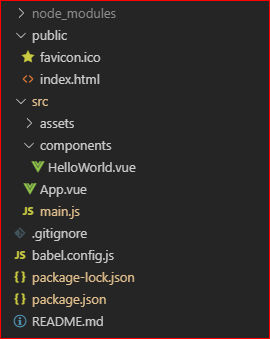
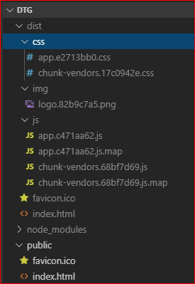
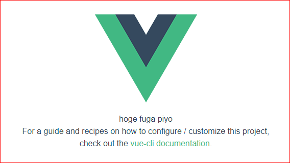

前回は環境構築で終わってしまいましたが、今回から本格的に開発を始めていきます。取っ掛かりとして、Vue CLIで作った環境の内容を確認しつつ、どのファイルがどのように参照されているか、どのファイルをどう変更してアプリケーションを開発するかを確認します。
何はともあれ、Vue CLIでcreateした直後の環境を俯瞰してみます。

とりあえずファイルの名前で判断して、index.htmlあたりを見てみます。
<!DOCTYPE html>
<html lang="en">
<head>
<meta charset="utf-8">
<meta http-equiv="X-UA-Compatible" content="IE=edge">
<meta name="viewport" content="width=device-width,initial-scale=1.0">
<link rel="icon" href="<%= BASE_URL %>favicon.ico">
<title>dtg</title>
</head>
<body>
<noscript>
<strong>We're sorry but dtg doesn't work properly without JavaScript enabled. Please enable it to continue.</strong>
</noscript>
<div id="app"></div>
<!-- built files will be auto injected -->
</body>
</html>なんとなく<div id="app">あたりが気になりますが、内容としてはあっさりしたものです。というかこれ、どこでVue.jsとか読み込んでるの・・・？CSSとかも全然記述ないけど・・・？
結論から言えば、現状の状態は「動作する実体」ではありません。ただの生成元でありテンプレートです。というわけで、実体を生成・参照するためにビルドを行う必要がありますので、下記のコマンドを実行します。
npm run buildしばらく待つとメッセージが表示されるはずです。
DONE Build complete. The dist directory is ready to be deployed.
INFO Check out deployment instructions at https://cli.vuejs.org/guide/deployment.htmlすると今までのフォルダ体系に、distというフォルダが追加されていると思います。もう名前からしてそれっぽいですね。

ファイル名はともかく、フォルダ構成はなんか「それっぽい」ですよね。というわけで、改めてindex.htmlを参照してみます。ただし、今度はdist配下にいるindex.htmlです。ちなみに、下のソースは読みやすいように改行を入れてますが、元の状態は改行なしです。おいおい。
<!DOCTYPE html>
<html lang=en>
<head>
<meta charset=utf-8><meta http-equiv=X-UA-Compatible content="IE=edge">
<meta name=viewport content="width=device-width,initial-scale=1">
<link rel=icon href=/favicon.ico>
<title>dtg</title>
<link href=/css/app.e2713bb0.css rel=preload as=style>
<link href=/css/chunk-vendors.17c0942e.css rel=preload as=style>
<link href=/js/app.c471aa62.js rel=preload as=script>
<link href=/js/chunk-vendors.68bf7d69.js rel=preload as=script>
<link href=/css/chunk-vendors.17c0942e.css rel=stylesheet>
<link href=/css/app.e2713bb0.css rel=stylesheet>
</head>
<body>
<noscript>
<strong>We're sorry but dtg doesn't work properly without JavaScript enabled. Please enable it to continue.</strong>
</noscript>
<div id=app></div>
<script src=/js/chunk-vendors.68bf7d69.js></script>
<script src=/js/app.c471aa62.js></script>
</body>
</html>うんうん、ビルド前のindex.htmlの比べると、JavaScriptやCSSが読み込まれているのが見て取れます。なるほど、とりあえずビルドすりゃいいんだな！（白目）読み込む対象のファイル名が明らかにsrcフォルダ内に存在するJavaScriptやvueファイルとは異なりますが、ビルドされた結果のファイルなので気にしないこととします。
JavaScriptのソースであるmain.jsを参照してみます。ちなみに、前回のBuefy導入に伴い、このソースは書き換わっています。
import Vue from 'vue'
import Buefy from 'buefy'
import 'buefy/dist/buefy.css'
import App from './App.vue'
Vue.use(Buefy)
Vue.config.productionTip = false
new Vue({
render: h => h(App),
}).$mount('#app')
Vueインスタンスの生成時に#appをマウントしています。$mountは、マウントされていないインスタンスに手動でマウントするためのメソッドです。上記の内容だとインスタンスにelオプションが存在しないので、$mountしないとマウントされていない状態になります。
Vue インスタンスがインスタンス化において el オプションを受け取らない場合は、DOM 要素は関連付けなしで、”アンマウント(マウントされていない)” 状態になります。
とは言え、これだけで何かをやっているわけでなく、App.vueをコンポーネントとして登録しているだけのようなので、今度はApp.vueを参照してみます。
なお、描画関数renderの部分h => h(App)はこのissuesにその由来がありました。興味深かったので、別記事ででも掘り下げようかな・・・。
App.vueの内容は下記の通りです。上からHTML、JavaScript、CSSの順に記述されていることがわかります。
<template>
<div id="app">
<img alt="Vue logo" src="./assets/logo.png">
<HelloWorld msg="Welcome to Your Vue.js App"/>
</div>
</template>
<script>
import HelloWorld from './components/HelloWorld.vue'
export default {
name: 'app',
components: {
HelloWorld
}
}
</script>
<style>
#app {
font-family: 'Avenir', Helvetica, Arial, sans-serif;
-webkit-font-smoothing: antialiased;
-moz-osx-font-smoothing: grayscale;
text-align: center;
color: #2c3e50;
margin-top: 60px;
}
</style>この中でJavaScriptの部分を参照してみると、HelloWorld.vueというコンポーネントを利用しています。
<script>
import HelloWorld from './components/HelloWorld.vue'
export default {
name: 'app',
components: {
HelloWorld
}
}
</script>HelloWorldという文字はHTMLのソース部分にもあって、タグとして利用されています。ただ、この部分だけ見るとmsgに値をセットしているだけで、それ以上の挙動はちょっと追えそうにありません。
<HelloWorld msg="Welcome to Your Vue.js App"/>ちなみに、このmsgにセットされている文字列を変更すると出力した結果も変更されます。当たり前ですが。
<HelloWorld msg="hoge fuga piyo"/>
ということは、HelloWorld.vueってコンポーネントを参照してみないと具体的なところはわからないな、という感じです。
ではいよいよHelloWorld.vueを参照します。今までのソースよりはHTMLの部分がいろいろ記述してあるため、ちょっとばっかり長いです。
<template>
<div class="hello">
<h1>{{ msg }}</h1>
<p>
For a guide and recipes on how to configure / customize this project,<br>
check out the
<a href="https://cli.vuejs.org" target="_blank" rel="noopener">vue-cli documentation</a>.
</p>
<h3>Installed CLI Plugins</h3>
<ul>
<li><a href="https://github.com/vuejs/vue-cli/tree/dev/packages/%40vue/cli-plugin-babel" target="_blank" rel="noopener">babel</a></li>
<li><a href="https://github.com/vuejs/vue-cli/tree/dev/packages/%40vue/cli-plugin-eslint" target="_blank" rel="noopener">eslint</a></li>
</ul>
<h3>Essential Links</h3>
<ul>
<li><a href="https://vuejs.org" target="_blank" rel="noopener">Core Docs</a></li>
<li><a href="https://forum.vuejs.org" target="_blank" rel="noopener">Forum</a></li>
<li><a href="https://chat.vuejs.org" target="_blank" rel="noopener">Community Chat</a></li>
<li><a href="https://twitter.com/vuejs" target="_blank" rel="noopener">Twitter</a></li>
<li><a href="https://news.vuejs.org" target="_blank" rel="noopener">News</a></li>
</ul>
<h3>Ecosystem</h3>
<ul>
<li><a href="https://router.vuejs.org" target="_blank" rel="noopener">vue-router</a></li>
<li><a href="https://vuex.vuejs.org" target="_blank" rel="noopener">vuex</a></li>
<li><a href="https://github.com/vuejs/vue-devtools#vue-devtools" target="_blank" rel="noopener">vue-devtools</a></li>
<li><a href="https://vue-loader.vuejs.org" target="_blank" rel="noopener">vue-loader</a></li>
<li><a href="https://github.com/vuejs/awesome-vue" target="_blank" rel="noopener">awesome-vue</a></li>
</ul>
</div>
</template>
<script>
export default {
name: 'HelloWorld',
props: {
msg: String
}
}
</script>
<!-- Add "scoped" attribute to limit CSS to this component only -->
<style scoped>
h3 {
margin: 40px 0 0;
}
ul {
list-style-type: none;
padding: 0;
}
li {
display: inline-block;
margin: 0 10px;
}
a {
color: #42b983;
}
</style>冒頭のHTMLソースには{{ msg }}という文字があります。Mustache構文ってやつで、いかにもテンプレートとして利用できそうな見た目です。実際、Vue.jsにおいてテキストのデータバインディングで一番基本的な形式がこれです。また、JavaScriptの部分にもmsg: Stringという宣言が見て取れます。ということは、やっぱりApp.vueで設定した文字列がmsgに格納されるわけですね。そうなると下記のような入れ子構造になっていると推測できます。
|--index.html
| |--App.vue
| | |--HelloWorld.vueHelloWorld.vueには出力するページのメイン部分を記述して、値を変更する（あるいは時間を表示するなど値が不定である）場合などはMustache構文でテンプレートとして記述。これはこれとして、1つのコンポーネントとして扱う。App.vueには、Mustacheタグに対応したデータオブジェクトのプロパティ（ここではmsg）に値を何かしら設定することでデータの更新を行う・・・って感じですかねぇ。
とりあえず構造はなんとなくわかったような気がします。
assetフォルダには現時点でロゴ（Vue.jsのロゴ）の画像ファイルが格納されているだけです。
Vue CLIでcreateしたら下記の作業をすればよさそうです。
機能ができあがってきたらnpm run serveで挙動を確認したりnpm run buildでビルドしたりするわけですね。
前回の終わりはこんなくだりでした。
次回以降では
.vueファイルをいじって挙動を確認しつつ、webアプリの開発を進めてみようと思います。
「機能の実装してないじゃん！中身見ただけじゃん！」 ほげ_(:3」∠)_
すいません、書いてたらずいぶん長くなってしまいました。それにしても、Vue.jsはオフィシャルのドキュメントが充実している上に、Vue CLIが出力したサンプルの内容も分かりやすい構造になっていて、とても好感が持てます。
次から、次からはなんとか満を持して実装したいと思います。†悔い改めて†_(:3」∠)_